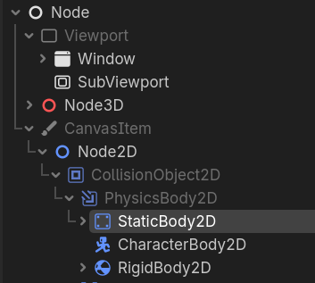

Godot Study Notes
Documenting my Godot game engine learning journey
This article will be updated over time (last updated: 2026.4.28)
Foreword
As the ancients said, reviewing the old helps one understand the new — so I’m taking notes while learning.
I figured I should learn something new, so I decided to learn the Godot engine to make the universe’s next breakout hit — a music game that’ll never see the light of day. Just an old saying.
Actually, before deciding what to learn, I considered whether to go with Godot or the more widely adopted Unity. But Godot had the following points that appealed to me:
- Seems lightweight on performance
Unity feels very heavy to me. If I want to start a project, I need to launch Unity Hub, then Unity, then Visual Studio. That’s a lot of things to open, and I’m not sure my portable laptop can handle it. Godot, on the other hand, is a portable application that feels very lightweight.
- GDScript seems easier to pick up
The games I’m planning to make are mostly 2D games. While there are specialized options like Cocos2D, my C++ skills are basically nonexistent, Java is still in its early stages, and learning C# looks like a winding path.
Godot’s native language, GDScript, is known for being as simple as Python. My actual experience confirms it’s easy to understand. Maybe learning GDScript will even help me pick up some Python skills along the way.
- Unity keeps causing drama
I can’t be bothered to elaborate on this one.
I can’t think of other reasons right now — I haven’t reached a level where I can analyze them from a technical perspective. If I improve enough in the future or my needs change, I’ll consider learning other engines.
This article is based on Clear Code’s “Godot 4 Ultimate Beginner’s Tutorial.” Here’s the Bilibili link.
Key Concepts
Nodes
Nodes are a fundamental concept in Godot. A scene is a node, a player is a node — many things are nodes. The entire Godot engine is a big world of nodes.
In Godot, the basic workflow is creating various nodes and connecting them together. I personally think of them as multiple objects.

The image above shows Godot’s main interface. Press Ctrl + A to add a new node.
Nodes use PascalCase — each word starts with a capital letter. Other identifiers use snake_case — all lowercase with underscores. Godot handles this automatically.
Nodes have layer priority, similar to Photoshop — nodes lower in the hierarchy take priority.
Parent Nodes and Child Nodes
Nodes can contain other nodes. You can assign node B to node A. In this case, A is the parent node of B, and B is the child node.
Changes to properties in a parent node affect all child nodes, but not vice versa.
You can right-click on a parent node to add child nodes. To add an existing node as a child, press Ctrl + Shift + A or click “Instance Child Node” to see a list of all compatible nodes.
Language
Godot’s native language is GDScript. Although it’s marketed as being similar to Python, to be precise, it basically is Python. Apart from a few keyword differences, everything else is essentially the same.
All game properties can be found in the Inspector panel. Hovering over them will display the corresponding variable name.
Since Markdown doesn’t have native GDScript support, code blocks will use Python highlighting.
Language Features
Data types: Common data types are all covered; arrays cover both tuples and lists.
Two types of variables: Regular variables and constants
Regular variable syntax:
1
2var name = 200 # General assignment
var names: int = 114 # Typed assignmentConstant syntax:
1
const value = 200 # General assignment
Functions: Used to implement functionality
Python uses
defas the function keyword, but GDScript usesfunc. The format is shown below:1
2func name_here(vari a: int) -> bool # Parentheses for type hints, arrow for return type
return true # Indentation indicates it still belongs to the functionControl flow: Includes if-else, for/while loops, continue/break, math operations, value comparisons, etc.
Classes: As I see it, nodes with functionality can be considered classes.
Built-in Functions
The game comes with two built-in functions, both starting with an underscore:
1 | func _ready() -> void: |
_ready — I call it the setup function. It runs once the node is ready.
_process — I call it the runtime function. It runs every frame.
Parent nodes can modify properties of child nodes. There are two ways to access them:
1 | get_node("node path") |
After typing, autocomplete will list all available child nodes.
For more detailed GDScript learning, check out my notes on Brackeys’ GDScript quick-start course.
Delta Time
Earlier I mentioned that the runtime function runs every frame, but this introduces a problem.
Suppose an object moves 10 pixels per frame. At 30 FPS, it moves 30 × 10 = 300 pixels. But if I’m running on the Sunway TaihuLight supercomputer, the framerate might hit 60, 120, or even 3000 FPS. That object would then move 600 pixels or more per second — way too fast to be playable.
I actually ran into a real example of this. When playing DJMAX TECHNIKA 2 on my computer, the countdown timer was going way too fast. After checking forums, I learned that this was because the game was originally developed for arcade machines with a 60Hz touchscreen. My monitor has a much higher refresh rate, which caused the game to run too quickly.
To solve this — ensuring consistent speed across machines with different frame rates — we need a unified time interval. That’s delta.
Delta time is the time it takes to render one frame. For example, delta at 30 FPS is 1s / 30f ≈ 0.0333.
Here’s how it works in practice:
| Speed (pixels/frame) | FPS | Delta (seconds) | Raw movement (pixels/sec) | Delta-corrected movement (pixels/sec) |
|---|---|---|---|---|
| 10 | 30 | 1 / 30 = 0.033 | 10 × 30 = 300 | 10 × 30 × 0.033 = 10 |
| 10 | 60 | 1 / 60 = 0.017 | 10 × 60 = 600 | 10 × 60 × 0.017 = 10 |
| 10 | 120 | 1 / 120 = 0.008 | 10 × 120 = 1200 | 10 × 120 × 0.008 = 10 |
As you can see, delta is multiplied by the raw movement speed to cancel out the effect of different frame rates, resulting in consistent movement speed.
In code, you multiply the desired value by delta:
1 | pos.x += speed * delta |
Many functions will automatically incorporate delta in their calculations, so you won’t always need to think about it. Still, it’s an important concept to understand.
Getting Input
This is also covered in my GDScript notes — let me copy it here.
Getting input involves two steps:
1. Create Input Maps
Go to Project → Project Settings → Input Map.
Create a new action, click the “+” button, and bind a key. Here’s the example from the tutorial: create an action called my_action that changes a Label’s color when the spacebar is pressed.
2. Call Input Maps in Scripts
The built-in function for key bindings is _input:
1 | func _input(event): |
There are two “pressed” functions to note: is_action_pressed and is_action_just_pressed. The key difference is that the former continuously checks the pressed state, while the latter only detects the initial press.
There’s a particularly useful function for 2D games: Input.get_vector. The parameter order is typically (negative_x, positive_x, negative_y, positive_y), corresponding to left, right, up, and down in the Godot coordinate system. Each execution adds 1 to the corresponding parameter.
Example:
1 | # Set the direction variable using the function call |
What About More Nodes?
Unique Name Access
In complex scenes, nodes can be deeply nested. Dragging a node directly into the editor will result in a very long path.
If a node is unique, you can right-click it and select “Access as Unique Name.”
Cross-Node Communication
In Godot, the most important thing is that nodes can access each other’s properties, so you need to understand how to connect them.
(To be improved)
Physics
The previous sections focused on moving a sprite around. But in games, sprites need to collide with each other, and there should be walls to constrain movement. This is where physics comes in.
Physics is the foundation of game movement. Images themselves don’t have collision properties — you need to use collision bodies and physics body nodes (like Area2D, PhysicsBody2D) to handle physical interactions.

CollisionObject and PhysicsBody are the foundation of physics properties. PhysicsBody includes three sub-types:
| Name | Definition | Description |
|---|---|---|
| StaticBody | Static collision body | Cannot move on its own, but other objects can collide with it |
| CharacterBody | Code-controlled entity | Player or enemy driven by code; uses built-in methods for complex movement |
| RigidBody | Physics body | Moves only through physical forces (e.g., grenades); set initial velocity and it moves |
| Area | Detection zone | Detects when other objects enter its bounds |